Biblical Feasts
42 articles
 The Voice of Shofar. The Film2018 · Biblical Feasts
The Voice of Shofar. The Film2018 · Biblical Feasts- Shavuot. The Feast of the Gift of Freedom2018 · Biblical Feasts, Art Midrash
- The Feast. Creating Through Memory2018 · Biblical Feasts
- The Power of Joy. Rejoice Always!2018 · Biblical Feasts
 The Ten Commandments (Anochi). Prayerful Chant2018 · Israel and the Church, Biblical Feasts
The Ten Commandments (Anochi). Prayerful Chant2018 · Israel and the Church, Biblical Feasts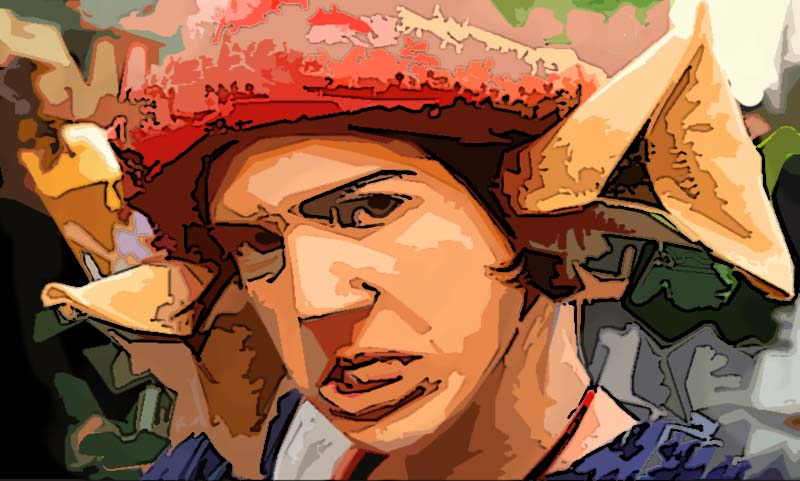
Purim 2017. All Articles2017 · Biblical Feasts Going Up to Yerushalayim2017 · Biblical Feasts, Travels, Galleries
Going Up to Yerushalayim2017 · Biblical Feasts, Travels, Galleries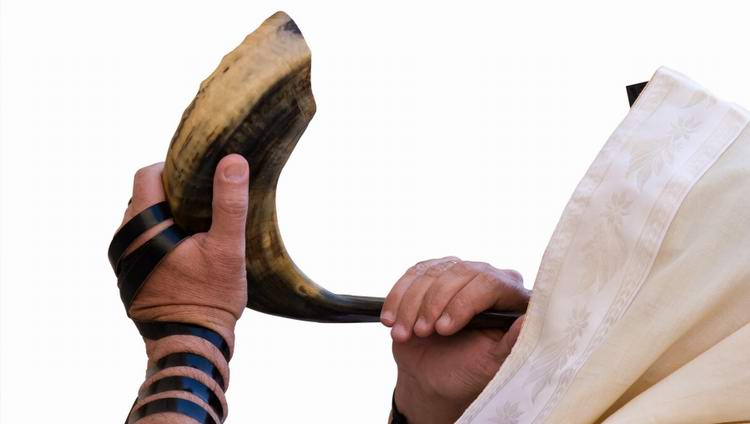
Sounds of the Shofar. Shevarim. Yom Kippur2016 · Biblical Feasts, Art Midrash Blessings on the Chanukah Menorah2015 · Biblical Feasts
Blessings on the Chanukah Menorah2015 · Biblical Feasts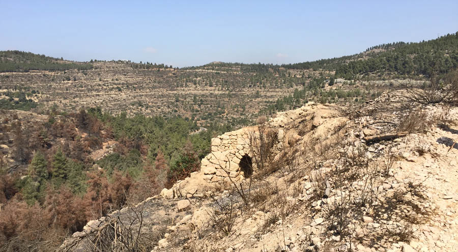
The Jewish Attitude to the Feasts of the LORD2015 · Biblical Feasts The Sukkah and the Wild Olive. Building a Sukkah as Written2015 · Biblical Feasts, Israel and the Church
The Sukkah and the Wild Olive. Building a Sukkah as Written2015 · Biblical Feasts, Israel and the Church Yom Kippur prayer. New music interpretation2015 · Biblical Feasts
Yom Kippur prayer. New music interpretation2015 · Biblical Feasts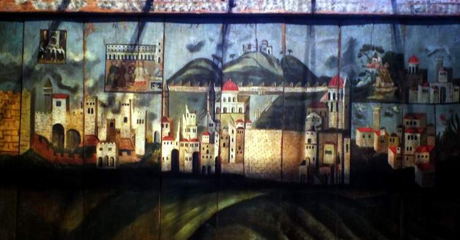
The Feast of Sukkot. The Deller Family's Dream2015 · Biblical Feasts, Art Midrash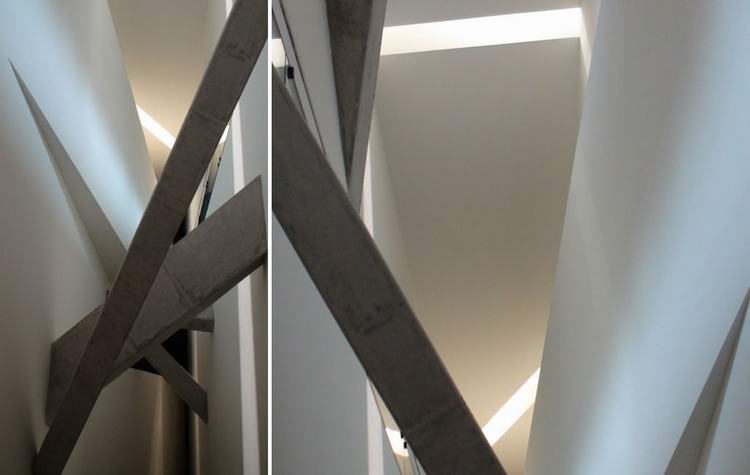
Daniel Libeskind's Sukkah. The Feast of Sukkot2015 · Artifacts, Biblical Feasts, Art Midrash, Travels- Sounds of the Shofar. Awe and Prophecy2015 · Biblical Feasts, Art Midrash
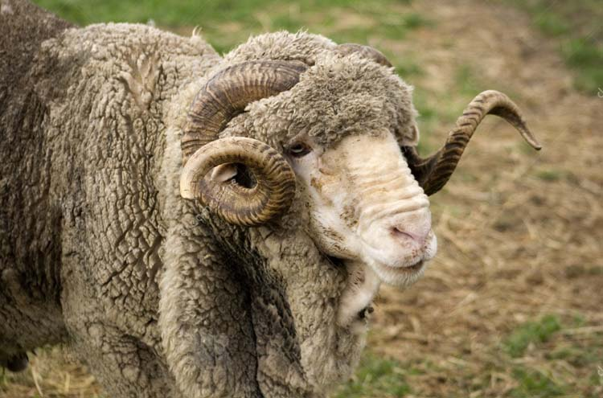
When the Shofar Sounds, Listen!2015 · Biblical Feasts Shofar or Trumpet? Let's Check2015 · The Language of the Bible, Biblical Feasts
Shofar or Trumpet? Let's Check2015 · The Language of the Bible, Biblical Feasts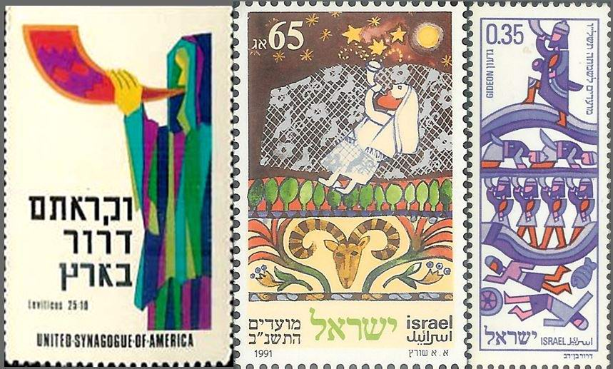
The Shofar: One of a Kind!2015 · Biblical Feasts, Art Midrash Obeying the Commandment of Shofar Blowing2015 · Biblical Feasts
Obeying the Commandment of Shofar Blowing2015 · Biblical Feasts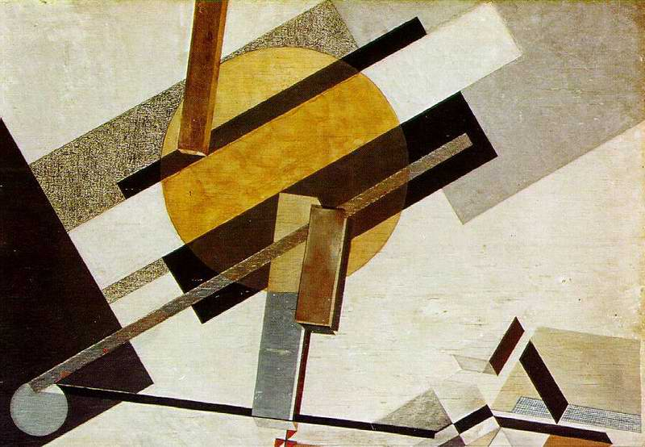
God Speaks in the Wilderness2015 · Biblical Feasts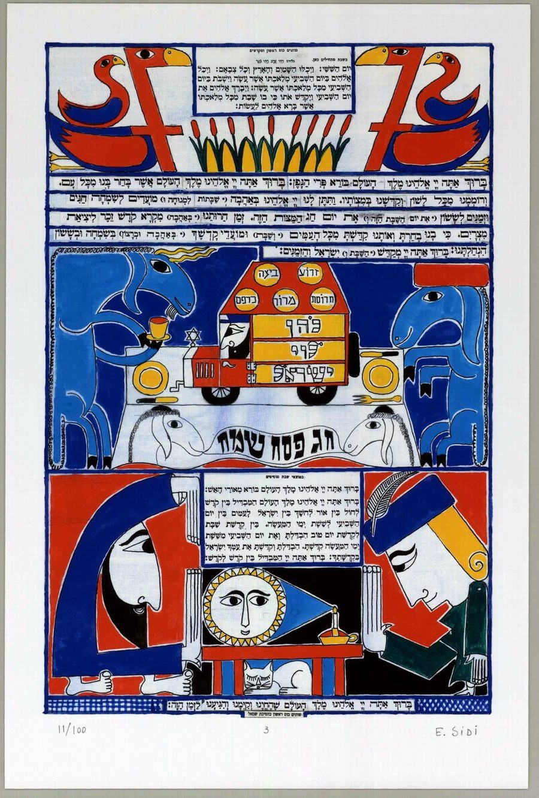
Contemporary Artists Interpret the Passover Haggadah2015 · Galleries, Art Midrash, The Bible and the Artist, Biblical Feasts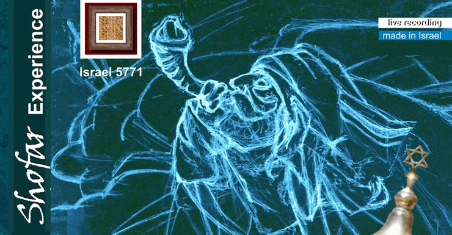
Hearing the Voice of the Shofar: the Film "Shofar Experience"2015 · Biblical Feasts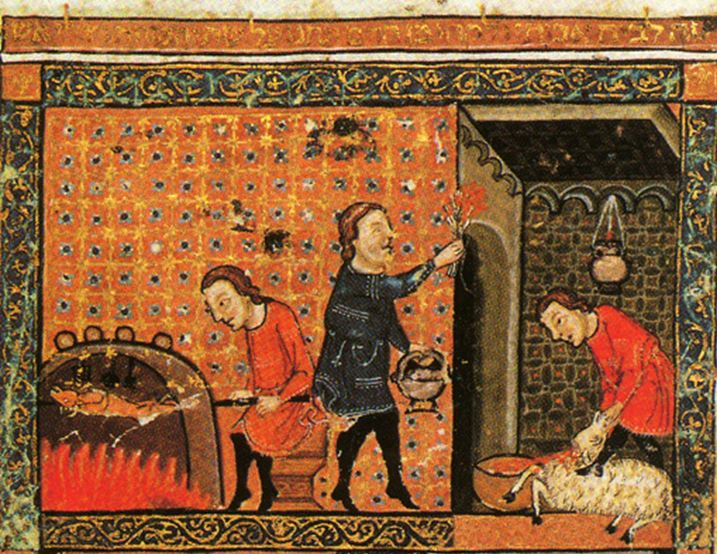
The Passover Haggadah. A Historical Note2015 · Artifacts, The Bible and the Artist, Biblical Feasts The Exodus from Egypt as Seen by James Tissot2015 · Galleries, The Bible and the Artist, Biblical Feasts
The Exodus from Egypt as Seen by James Tissot2015 · Galleries, The Bible and the Artist, Biblical Feasts Haifa Celebrates Purim 20152015 · Galleries, Biblical Feasts
Haifa Celebrates Purim 20152015 · Galleries, Biblical Feasts- Purim-shpil. Exposing Evil…2015 · The Bible and the Artist, Biblical Feasts
- Purim. Tearing Off the Masks2015 · Biblical Feasts
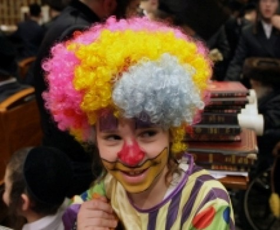
Purim. A Feast for the "Wrong" Jews?2015 · Biblical Feasts- Videos on the Shofar (Rosh Hashanah)2014 · Biblical Feasts
 Ministry in Yaroslavl2014 · Art Midrash, Biblical Feasts
Ministry in Yaroslavl2014 · Art Midrash, Biblical Feasts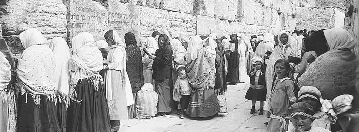
May a Woman Blow the Shofar?2014 · Biblical Feasts Turn Us, and We Shall Be Turned!2014 · Biblical Feasts, Israel and the Church, The Bible and the Artist
Turn Us, and We Shall Be Turned!2014 · Biblical Feasts, Israel and the Church, The Bible and the Artist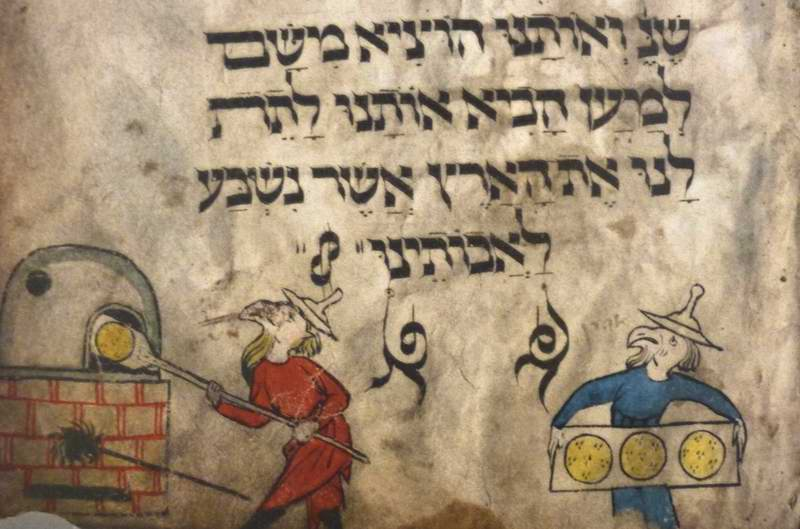
Pesach: What Did Our Fathers Bake Matzah From in the Wilderness?2014 · Biblical Feasts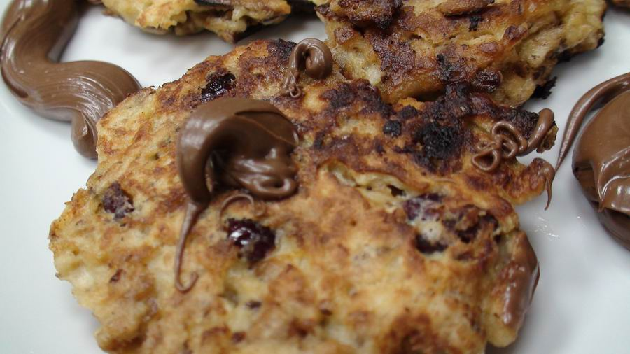
Pesach: Matzah Dishes by Misha Rubin2014 · Biblical Feasts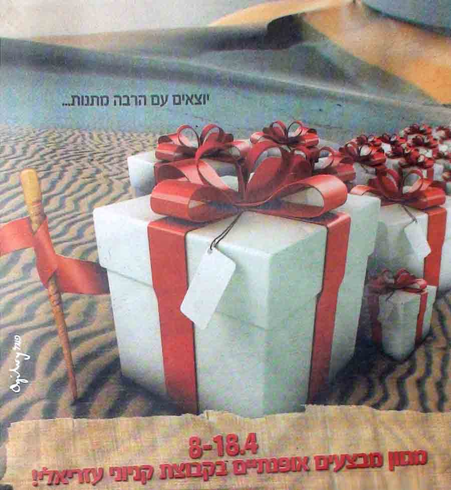
Pesach in Israeli Advertising2014 · Artifacts, Biblical Feasts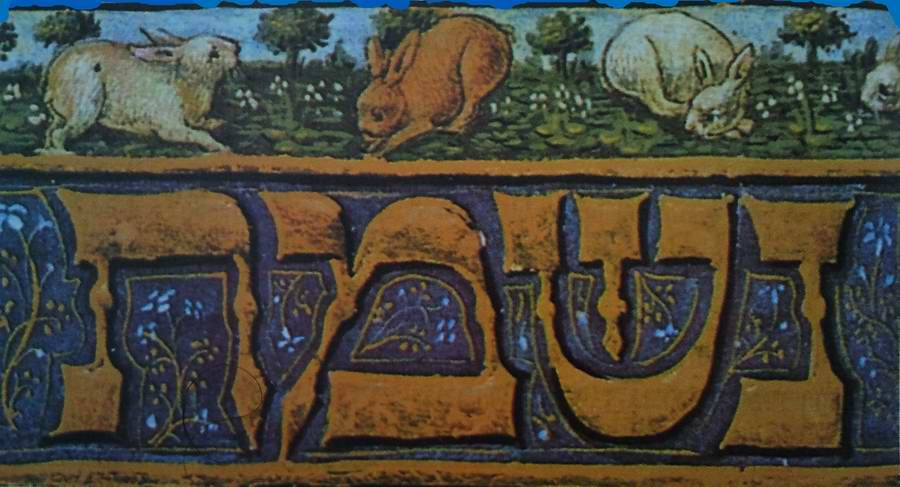
Unleavened Bread That Came Down from Heaven2014 · Biblical Feasts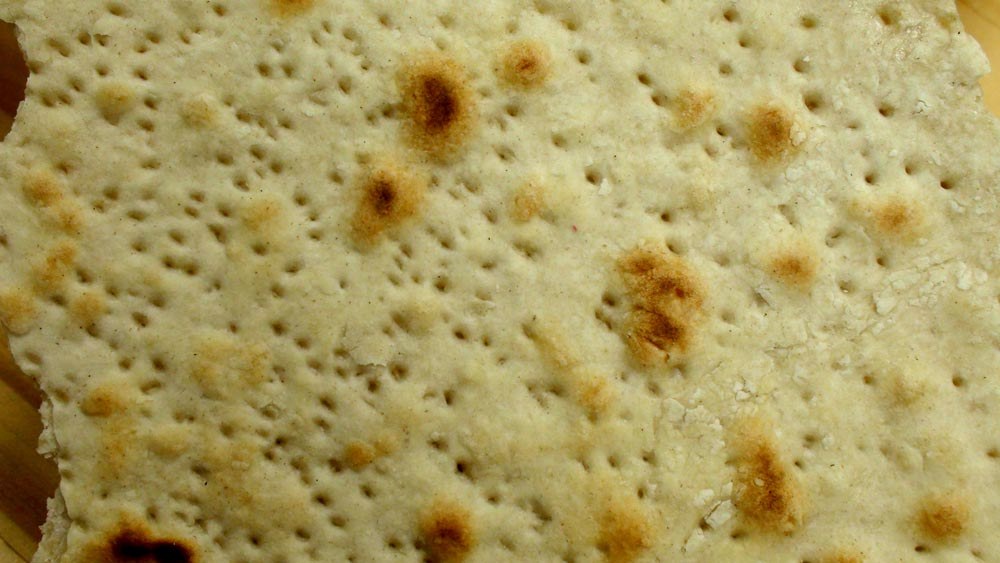
Matzah, the Unleavened Bread: How to Make Matzah (Recipe and Video)2014 · Biblical Feasts The Voice of the Shofar, Part 4. Yovel: the Jubilee2014 · Biblical Feasts, Art Midrash
The Voice of the Shofar, Part 4. Yovel: the Jubilee2014 · Biblical Feasts, Art Midrash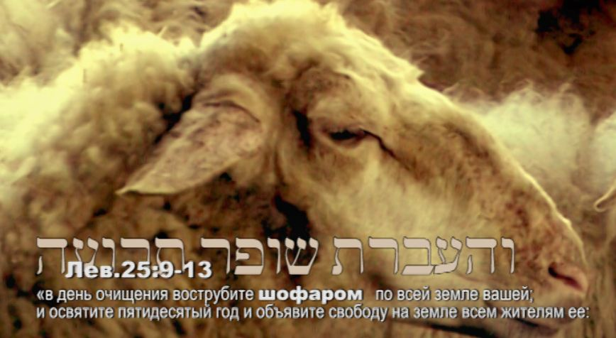
The Voice of the Shofar, Part 5. Israel, a Shofar in the Hands of the Creator2014 · Biblical Feasts, Art Midrash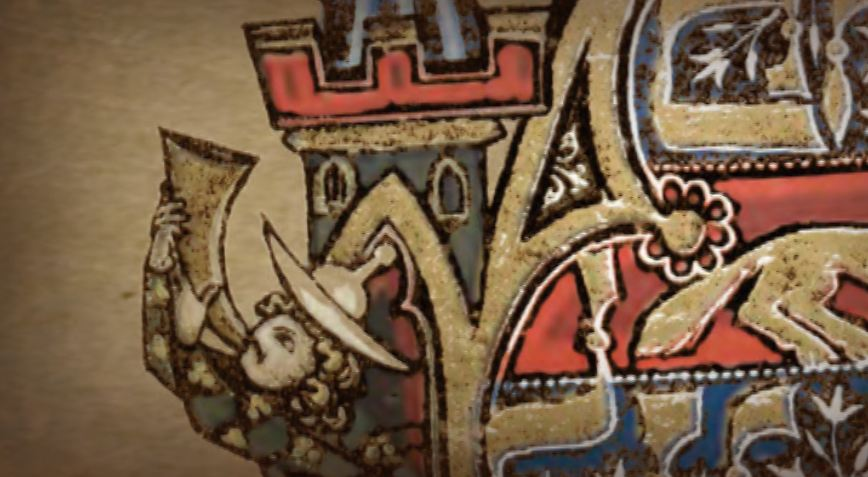
The Voice of the Shofar, Part 3. Sinai: a Remembrance of Blowing2014 · Biblical Feasts, Art Midrash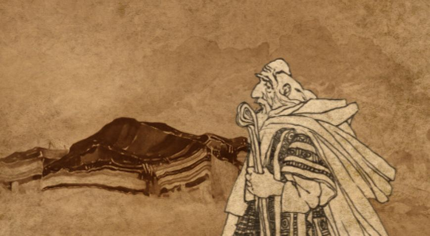
The Voice of the Shofar, Part 2. Keren: the Calling2014 · Biblical Feasts, Art Midrash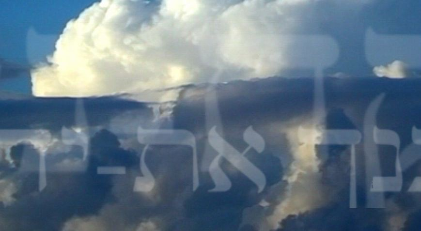
The Voice of the Shofar, Part 1. A High Calling2014 · Biblical Feasts, Art Midrash